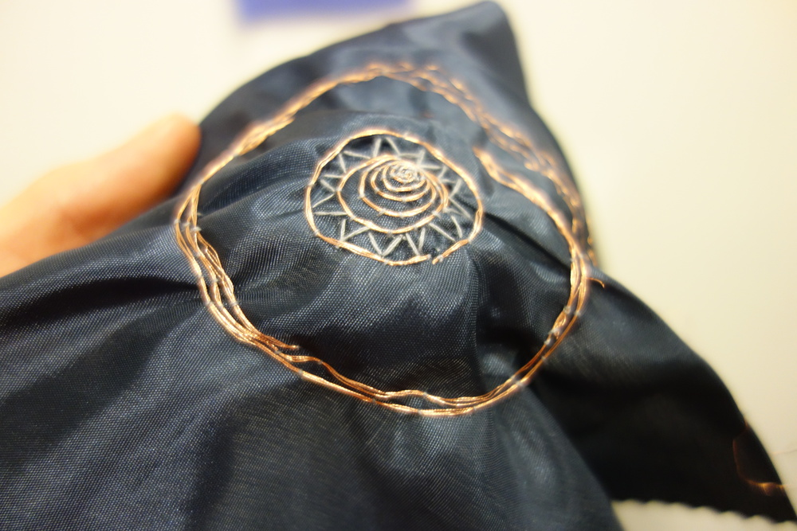

I designed a series of workshops designed to explore electromagnetic fields (EMFs)s through embroidery and craft techniques. In the sessions participants are invited to hand craft coils with copper tape or thread. EMFs can be used as transmitters or receivers of information (such as speakers or antennas), and the samplers participants made function technically as speakers as well as being beautifully crafted pieces. I also designed a worksheet for kids to get started called “A4 Audio” (download a PDF here). The workshops were part of the Rooms festival in 2015, and the Craft Council’s Make_Shift_Do at Derby Silk Mills in 2016. The workshop design was inspired by Kobakant’s speaker pattern and Claire Williams frequency exploration

Exploring Electronics as material. Un-concealing some embedded electronics. Functional Fields



I explored paper speaker making in a workshop. The event was part of an arts and technology festival in Bristol. Participants were invited to make a speaker out of paper, copper and a magnet. Through the workshop I hoped to explore ideas surrounding the materiality of electronic devices and people’s responses to the material. I was taking in the conversations we had in the process, and the creative way that participants engaged both on their own and in families.